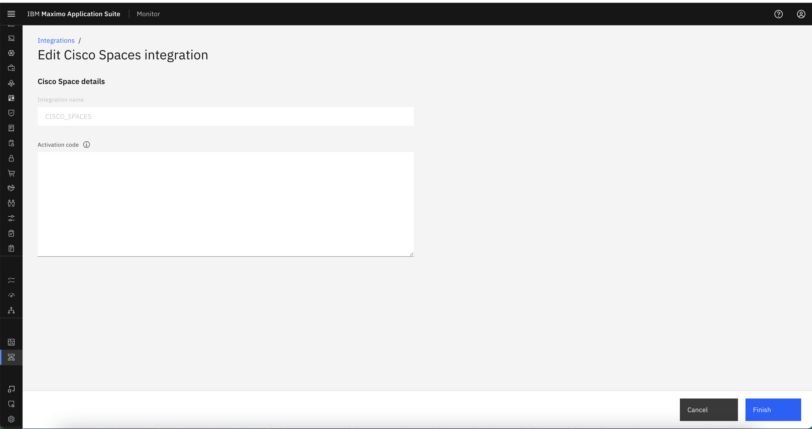
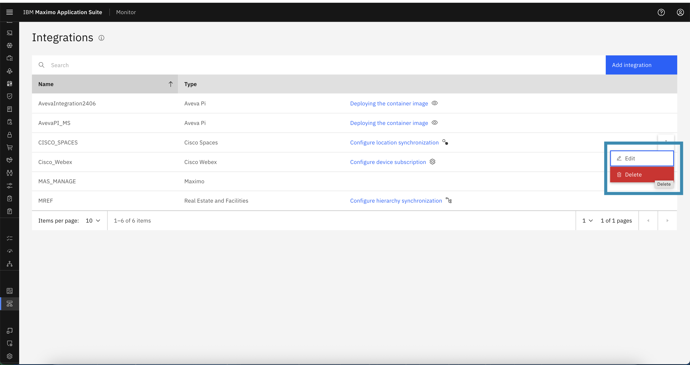
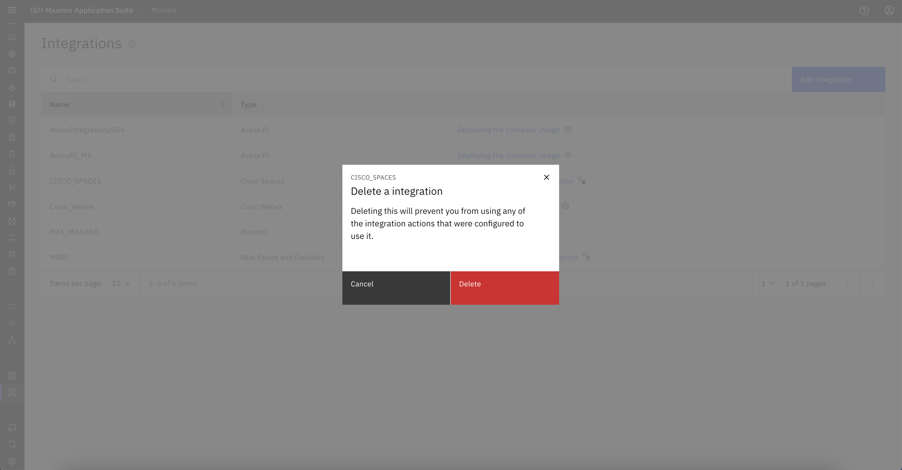
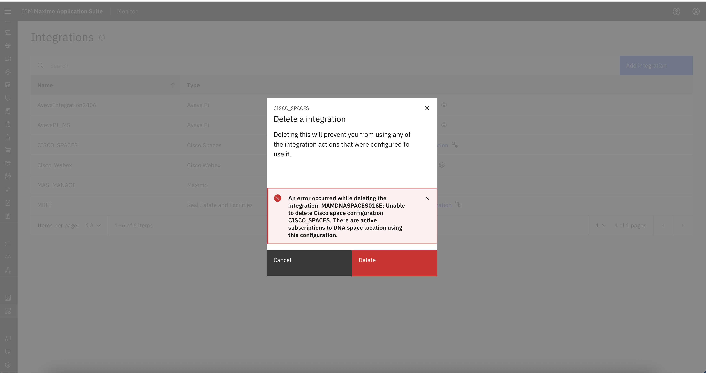

Edit or Delete Cisco Spaces Integration Configuration
This guide explains how to edit or delete an existing Cisco Spaces integration configuration. These options are useful when you need to:
- Update the Activation Token.
- Remove an outdated or no longer needed integration.
Edit Cisco Spaces Configuration
You can edit the Cisco Spaces configuration if the activation key (JWT token) needs to be renewed, updated, or replaced.
Steps to Edit:
- Navigate to Setup → Integrations in the MAS Monitor application.
- Locate the Cisco Spaces integration from the integrations list.
- Click on the ellipsis (⋮) button next to the integration name.
-
Select Edit from the action menu.

-
You will be redirected to Edit Cisco Spaces integration :
- Update the Activation Token if it has expired or needs to be renewed.
- Click on Finish to save the changes to apply the new configuration.

⚠️ Only the activation key can be edited. Integration name cannot be changed, if required, then consider deleting and recreating the configuration.
Delete Cisco Spaces Configuration
You can delete the Cisco Spaces configuration if it is no longer required. However, this action has a strict conditions.
Steps to Delete:
- Navigate to Setup → Integrations.
- Find the Cisco Spaces integration entry.
- Click the ellipsis (⋮) menu next to the integration.
-
Select Delete.

-
A confirmation popup will appear with the message:
Deleting this will prevent you from using any of the integration actions that were configured to use it.

-
Click Confirm to proceed with deletion.
⚠️ Important Note
Deleting the Cisco Spaces integration is only allowed if all associated locations are unsubscribed.
- If any location is still subscribed, deletion will be blocked.
- You must first go to each subscribed location and perform an Unsubscribe action.
- Once all locations are unsubscribed, the Delete action will be permitted.

Summary
- Use Edit to update the activation key.
- Use Delete to completely remove the configuration — only after unsubscribing all locations.
- Always verify whether the integration is still in use before performing actions like deletion.